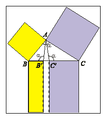

Carrying on the tradition of deep mathematics, the Islamic mathematicians reprised the earlier Greek mathematics and forged results in new directions, particularly algebraic.
Cite what you view as the major differences between Islamic mathematics and Greek mathematics. Ignore the obvious changes in emphasis from geometry to algebra. What about the rigor? What about mathematical parochialism?
Apply similarity to give a rigorous proof of the Thabit generalization of the
Pythagorean theorem. Namely that from the vertex A of triangle ABC, construct B' and C' so that the
angles AB'B and AC'C both equal the angle at A.
Then |AB|2 + |AC|2 = |BC|(|BB'|+|CC'|).

Prove 13+23+...+103=(1+2+...+10)2 in such a way that the proof easily carries over to any other integer other than 10. (You may want to carry out a formal induction and modify that.)
Solve the following problem of Abū Kāmil: Suppose 10 is divided into two parts and the product of one part by itself equals the product of the other part by the square root of 10. Find the parts.